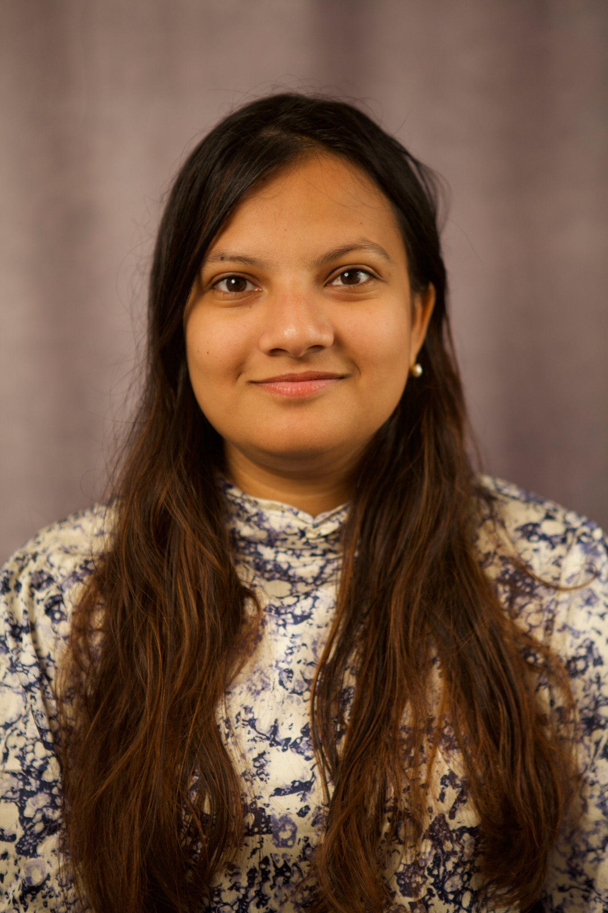

A-407 Newell-Simon Hall /
407 S. Craig Street,
Carnegie Mellon University
Pittsburgh, PA 15213
Socials: @peyajm29
|
I am a second-year master's student at Carnegie Mellon University (Robotics Institute, School of Computer Science). I am co-advised by Prof. Jeffrey Bigham and Prof. Aaron Steinfeld in the Accessibility at CMU group. I am interested in Artificial Intelligence and Human-Computer Interaction.
Previously, I was a research fellow at Microsoft Research India, where I worked in Technology and Empowerment. Prior to that, I graduated with distinct honors from Delhi Technological University, India.
Email /
CV /
Google Scholar /
GitHub /
LinkedIn /
X
Now
I help organise the CMU Accessibility Lunch Seminar Series. Interested in joining us as a guest speaker? You're invited to sign up here!
Next
I am applying to CS PhD programs for the Fall 2025 intake.
News
Oct 2024 |
I presented my first-author paper and poster at ASSETS 2024! I also served as an online student volunteer.
|
Sep 2024 |
I submitted my first CHI paper! Also reviewed a bunch of interesting human-AI interaction CHI papers.
|
July 2024 |
I served as a project leader for CMU AI Scholars, a CS Pathways Initiative. My high school mentees worked on retinal image classification. Check out their project website.
|
May 2024 |
I presented my ongoing thesis work at the W4A Doctoral Consortium in Singapore. Next, heading to Bengaluru to catch up with folks at Microsoft Research India.
|
Feb 2024 |
I am helping organise the CMU Accessibility Lunch Seminars on Mondays. We have an incredible lineup of guest speakers this semester! Subscribe to our mailing list for updates.
|
|